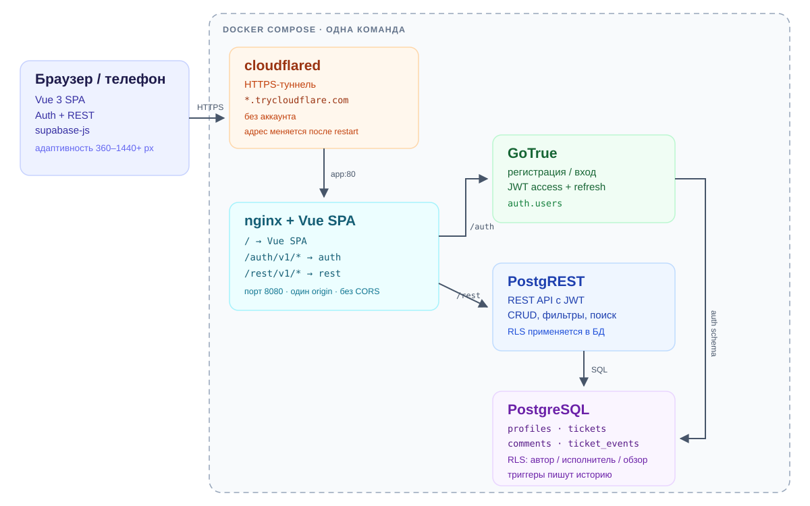

Веб-сервис для команды: регистрация, постановка задач с исполнителем, этапы «Новая → Уточнение → В работе → Завершена», комментарии и история действий. Приватность по умолчанию: чужие задачи скрыты, обзор команды включается персональной настройкой.
«Поток» — SPA на Vue 3, которая работает с локальным Supabase: GoTrue отвечает за регистрацию и JWT, PostgREST — за REST API, PostgreSQL — за данные и Row Level Security. nginx раздаёт интерфейс и проксирует API на том же origin, поэтому приложение одинаково работает на localhost и по HTTPS-ссылке туннеля без CORS и пересборки. Всё поднимается одной командой Docker Compose.
Нужен Docker Desktop. Первый запуск скачивает образы Supabase. Данные хранятся в Docker volume и переживают перезапуск контейнеров.
Регистрация и вход по email и паролю, выход, сохранение сессии. Приватность по умолчанию: видны свои задачи и назначенные; обзор всей команды — персональная настройка.
Четыре этапа, drag&drop между колонками, назначение исполнителя, категории, поиск и фильтры. Отдельные состояния загрузки, пустоты и ошибок.
Обсуждение внутри задачи, счётчики комментариев на карточках. История создаётся триггерами: создание, смена этапа и исполнителя, правки, комментарии.
Кастомные выпадающие списки с клавиатурой, блокировка кнопок на время сохранения, защита от дублей, понятные сообщения об ошибках и адаптивность.

Схема реализации: браузер → cloudflared → nginx + Vue SPA → GoTrue / PostgREST → PostgreSQL с RLS. Все контейнеры, кроме браузера, запускаются в Docker Compose.
nginx отдаёт собранный Vue SPA и проксирует /auth/v1/* в GoTrue, а /rest/v1/* в PostgREST. Браузер всегда обращается к текущему адресу, поэтому нет CORS, а ссылка туннеля работает без пересборки.
RLS проверяет доступ на уровне PostgreSQL: автор, исполнитель или включённый обзор команды. Прямой запрос к REST API с чужим JWT не вернёт чужие задачи, комментарии и историю.
События пишут только триггеры security definer; у клиента есть лишь чтение. Поэтому историю нельзя переписать через API, а действия привязаны к автору изменения.
id задачи генерируется на клиенте, кнопка блокируется во время запроса. Повторное нажатие не создаёт дубликат; миграции можно применять повторно при каждом запуске.
| Действие | Наблюдатель | Исполнитель | Автор |
|---|---|---|---|
| Видеть свои и назначенные задачи | да | да | да |
| Видеть чужие задачи | только при включённом обзоре | — | — |
| Читать комментарии и историю | если видит задачу | да | да |
| Писать комментарии | если видит задачу | да | да |
| Менять этап, поля и исполнителя | — | да | да |
| Удалять задачу | — | — | да |
| Таблица | Назначение | Доступ |
|---|---|---|
| profiles | Справочник сотрудников и настройка обзора команды | читают все; меняет только свой профиль |
| tickets | Задачи: автор, исполнитель, этап, категория | свои и назначенные; чужие — по настройке обзора |
| comments | Комментарии к задачам | только при доступе к задаче |
| ticket_events | История действий по задаче | чтение при доступе; запись — только триггеры |
По умолчанию пользователь видит только задачи, которые создал сам, и задачи, назначенные на него. Чужие задачи, их комментарии и история недоступны — и в интерфейсе, и при прямом запросе к API.
В этой реализации n8n не используется: в Docker Compose нет сервиса n8n, workflows не настроены, доступов к n8n нет. Автоматизация выполняется внутри приложения и Supabase — Auth, REST API, RLS и триггеры истории. Если n8n нужен по требованиям, его можно добавить отдельным контейнером с логином, паролем и публичным маршрутом.